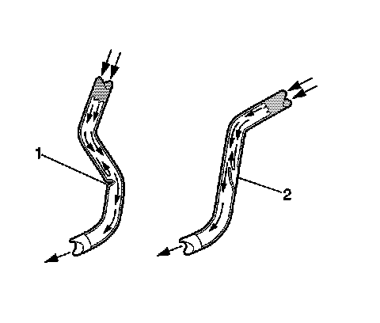

Brake Pipe and Hose Inspection
Brake Pipe and Hose Inspection
Caution: Refer to Brake Fluid Irritant Caution (Brake Fluid Irritant Caution) .
Notice: Refer to Brake Fluid Effects on Paint and Electrical Components Notice (Vehicle Damage Warnings) .
1. Visually inspect all of the brake pipes for the following conditions:
* Kinks, improper routing, missing or damaged retainers
* Leaking fittings, excessive corrosion
2. If any of the brake pipes exhibited any of the conditions listed, then the identified pipe, or pipes, require replacement.
3. Ensure that the vehicle axles are properly supported at ride height in order to maintain the proper relationship of the flexible brake hoses to the chassis.

4. Visually inspect all of the flexible brake hoses for the following conditions:
* Kinks (1), improper routing, twists, chafing, missing or damaged retainers
* Leaking connections, cracking, dry-rot, blisters, bulges
5. If any of the flexible brake hoses exhibited any of the conditions listed, then the identified flexible brake hose, or hoses require replacement.
6. Squeeze the flexible brake hoses with firm finger pressure to check for soft spots (2), indicating an internal restriction. Check the entire length of each flexible brake hose.
7. If any of the flexible brake hoses were found to have soft spots (2), then the identified flexible brake hose, or hoses require replacement.